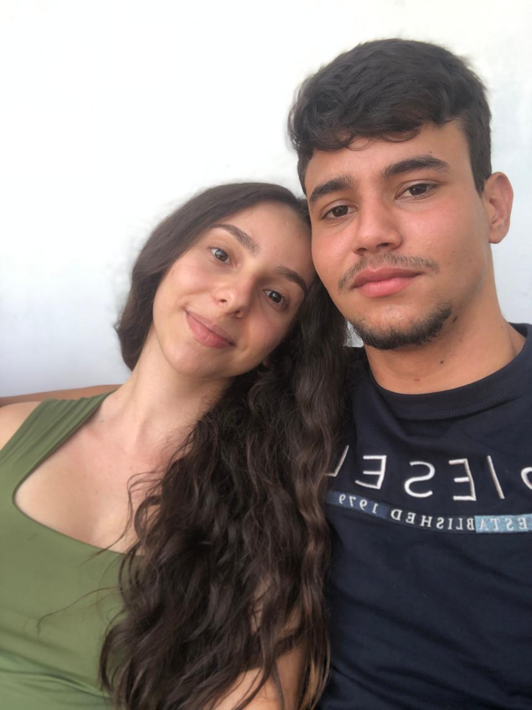
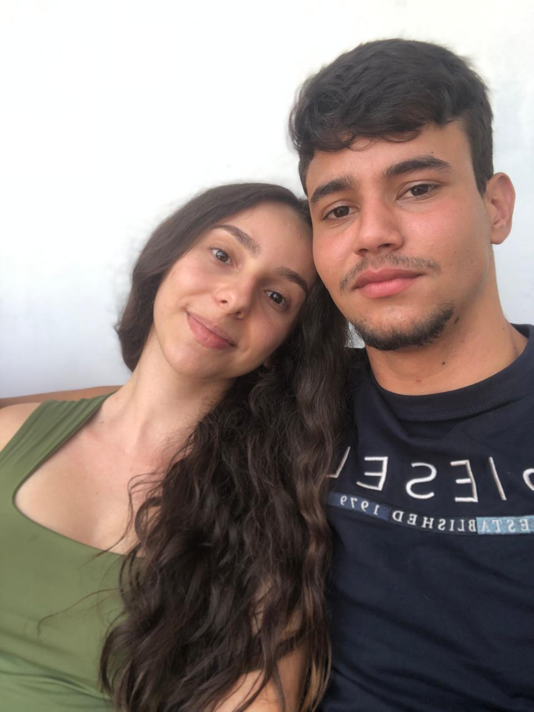
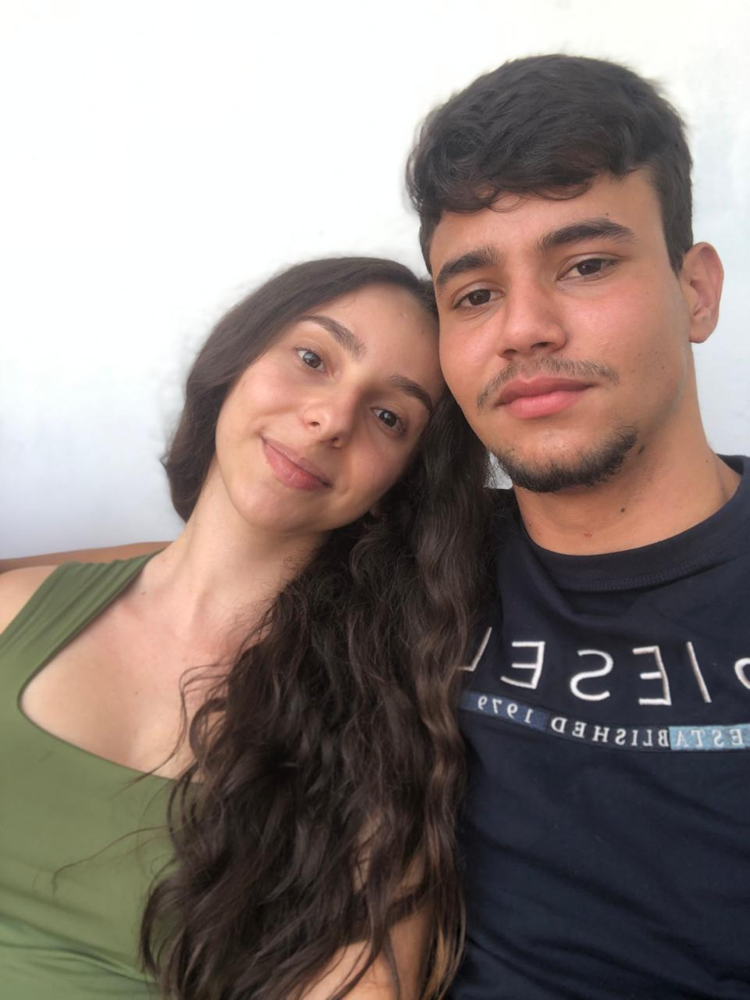

3 m√™ses cheio de carinho, risadas e amor verdadeiro üíò

Hoje celebramos 3 m√™ses de namoro üíï
Em 3 meses criamos histórias, risos e amor.
Que esse seja só o começo.
Quezia ou melhor AMOR DA MINHA VIDA obrigado por ser essa pessoa incrível, carinhosa e verdadeira, seu sorriso me dá paz, sua voz me acalma e seu amor me motiva todos os dias.
Tr√™s meses ao seu lado e parece que a vida ganhou novas cores. Cada conversa, cada sorriso e cada momento contigo me mostram o quanto voc√™ √© especial para mim. Em tão pouco tempo, voc√™ se tornou meu lugar de paz e alegria.Sou grato por cada detalhe, por quem voc√™ √© e por tudo que constru√≠mos juntos at√© aqui. Que esses tr√™s meses sejam apenas o come√ßo de uma hist√≥ria linda, cheia de amor, cumplicidade e sonhos compartilhados. Eu escolho voc√™, hoje e sempre. üíñ
Que este seja apenas o nosso começo .
Te amo e sou muito grato por ter você. ❤️
‚Äî Daniel üíñ